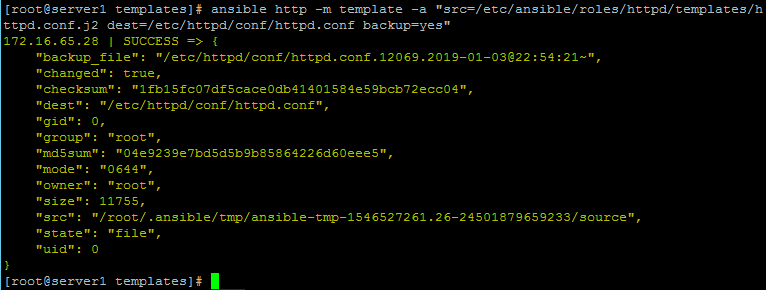
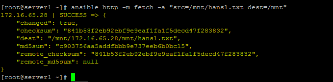
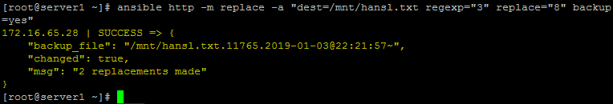
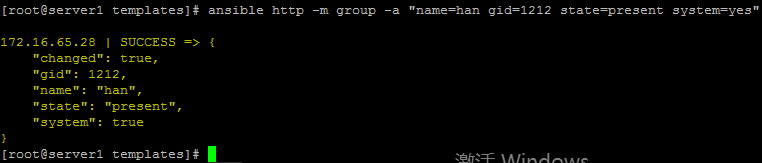
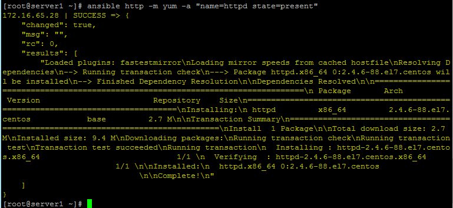
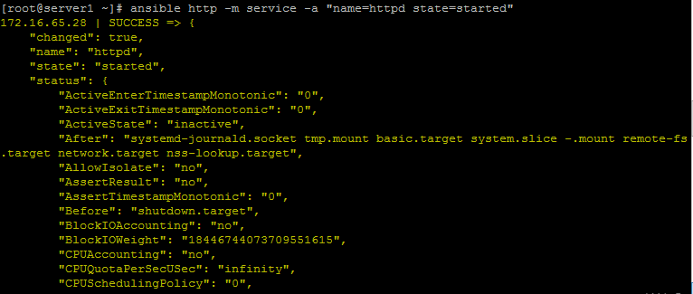
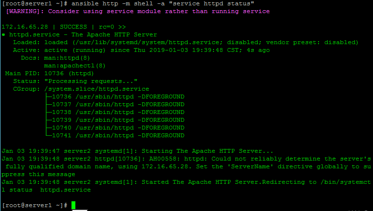

Ansible常用模块
[ansible]
这里主要记录一下常规的ansible命令
ansible的安装可以使用命令：yum install ansible -y
ansible的配置文件：
这里默认使用了all作为ansible命令的组，实际使用中，可以自己根据实际需求在文件/etc/ansible/host中添加主机组。 这里要注意的是被控制的主机需要添加ansible服务器的公钥，确保ssh能够没有密码就能够访问被控制的主机。
要使ansible的服务无密码访问被控制的主机还需将ansible主机的公钥加到被控制主机的authorized_key中。
ansible模块有很多，具体模块的使用方法可以使用 ansible-doc 命令可以详细的查看
例如：[root@server1 ~]# ansible-doc service # 查看模块 service 的使用方法
ansible命令通常由以下格式组成：
ansible <ansible.client> -m <module> -a <args>
其中<ansible.client>可以是配置文件中的服务器组名，ip，域名等一切能表达主机的名称。
<args>
[-k] //每次都要询问密码
[-u <username>] [--sudo] //以<username>的身份运行，再加--sudo获取root权限
-m的<module>:
command:
ansible <ansible.client> -m command -a "<command>"
//远程发送命令

template
ansible <ansible.client> -m template -a "src=</path/to/localfile> dest=</path/to/remotefile>"
backup： 如果原目标文件存在，则先备份目标文件
src：在ansible控制器上的Jinja2格式化模板的路径。 这可以是相对或绝对的路径。
dest：将模板渲染到远程机器上的位置。
owner：目标文件属主
group：目标文件属组
force:是否强制覆盖yes
mode:目标文件的权限模式，模式可以被指定为符号模式（例如，u + rwx或u = rw，g = r，o = r）。

copy:
src：要复制到远程主机的文件在本地的地址，可以是绝对路径，也可以是相对路径。如果路径是一个目录，它将递归复制。在这种情况下，如果路径使用”/”来结尾，则只复制目录里的内容，如果没有使用”/”来结尾，则包含目录在内的整个内容全部复制，类似于rsync。
content：用于替代”src”,可以直接设定指定文件的值
dest：必选项。要将源文件复制到的远程主机的绝对路径，如果源文件是一个目录，那么该路径也必须是个目录
directory_mode：递归的设定目录的权限，默认为系统默认权限
force：如果目标主机包含该文件，但内容不同，如果设置为yes，则强制覆盖，如果为no，则只有当目标主机的目标位置不存在该文件时，才复制。默认为yes
ansible <ansible.client> -m copy -a "src=</path/to/localfile> dest=</path/to/remotefile>"
//远程传文件

fetch
ansible <ansible.client> -m fetch -a "src=</path/to/localfile> dest=</path/to/remotefile>"
//远程文件复制到本地

replace
ansible <ansible.client> -m replace -a "dest=</path/to/remotefile> regexp='Old' replace='New' backeup=yes"

file:
ansible <ansible.client> -m file -a "dest=</path/to/remotefile> mode=<chmod.mun> [owner=<username>] [group=<group>]"
//远程创建文件，可以设置文件的权限与用户名
//第一次生成文件要state=touch

ansible <ansible.client> -m file -a "dest=</path/to/remotedir> mode=<chmod.num> state=directory"
//远程创建文件夹

ansible <ansible.client> -m file -a "dest=</path/to/remotefile> state=absent"
//远程删除文件

ping:
ansible <ansible.client> -m ping
//ping所有<ansible.client>的主机，查看ansible服务器和被控制主机的网络是否通。

service
ansible <ansible.client> -m service -a "name=<service.name> state={started|restarted|stoped}"
//修改服务的状态


shell:
ansible <ansible.client> -m shell -a '<command>'
//向远程主机发送命令

user:
home：指定用户的家目录，需要与createhome配合使用。
groups：指定用户的属组。
uid：指定用的uid。
password：指定用户的密码。
name：指定用户名。
createhome：是否创建家目录 yes|no。
system：是否为系统用户。
remove：当state=absent时，remove=yes则表示连同家目录一起删除，等价于userdel -r。
state：是创建还是删除。（present，absent）
shell：指定用户的shell环境。
generate_ssh_key：是否为相关用户生成SSH密钥。 这不会覆盖现有的SSH密钥。
ssh_key_bits：可选择指定要创建的SSH密钥中的位数。
ssh_key_passphrase：设置SSH密钥的密码。 如果没有提供密码，SSH密钥将默认没有密码。
ssh_key_file：指定SSH密钥文件名（可选）。 如果这是一个相对的文件名，那么它将是相对于用户的主目录。
ssh_key_type：指定要生成的SSH密钥的类型（可选）。 可用的SSH密钥类型将取决于目标主机上的实现。
ansible <ansible.client> -m user -a "name=<username> [passwd=<crypted.passwd>]"
//添加一个用户
此处的密码创建无效，详情请查看ansible用户创建及密码

根据实际情况，密码这个项最好是先在一台主机上建一个密码，然后在/etc/shadow里提取。而且某些系统中密码是包含特殊字符$，所以密码要用单 引号扩起来而$前要用\符号转译。
group模块
gid：指定用的gid。
name：指定用户名。
state：是创建还是删除。（present，absent）
system：如果是，则表示创建的组是系统组。

yum:
ansible <ansible.client> -m yum -a "name=<software.name> state=present"
//直接安装指定软件，如果已安装则查看版本信息。


